Creating a positive environment in the classroom is an essential component of my work. If the atmosphere in the classroom is negative, neither the students nor myself can focus on learning and developing. Even though I teach in three different spaces and do not have my own dedicated room, I still attempt to create a similar environment in the rooms in which I am teaching. Whether I am teaching a mathematics or engineering class, I put a lot of effort into creating a culture of learning, respect and collaboration, as well as an environment in which expectations and routines are clear. I have found success in my teaching by emphasizing these two twin aspects.
In addition to traditional teaching and lecturing, I like to emphasize student-centered learning and teaching in my classroom. When students can explain concepts and ideas to each other, they demonstrate that they have internalized the ideas well. When appropriate, I like to have students come and do problems and exercises on the board and explain it to each other.
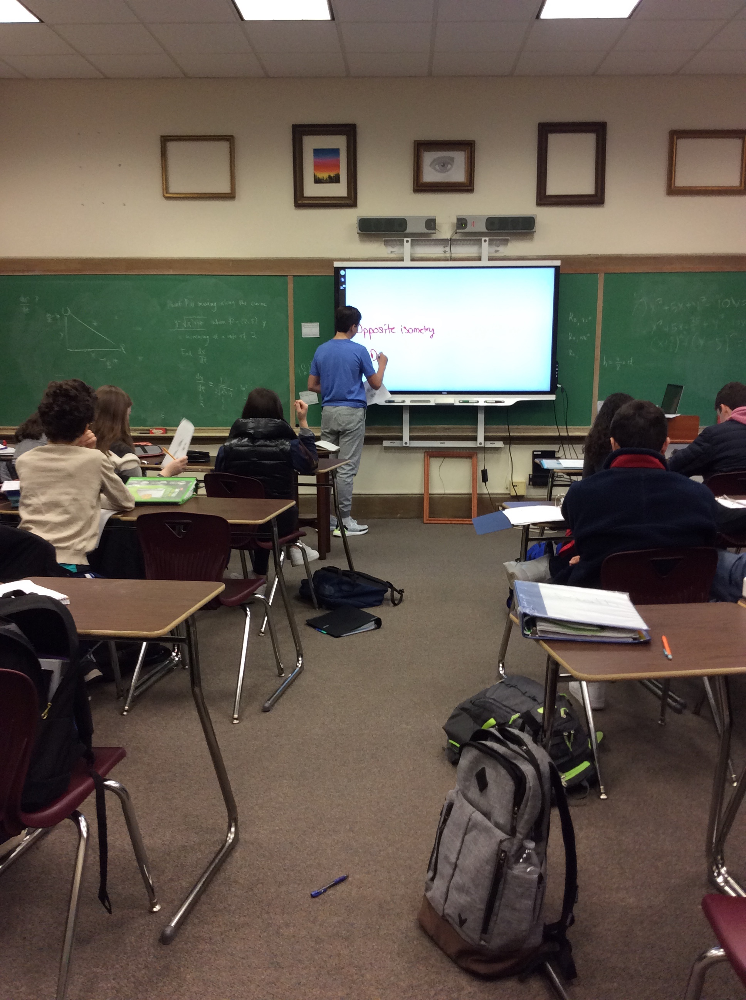 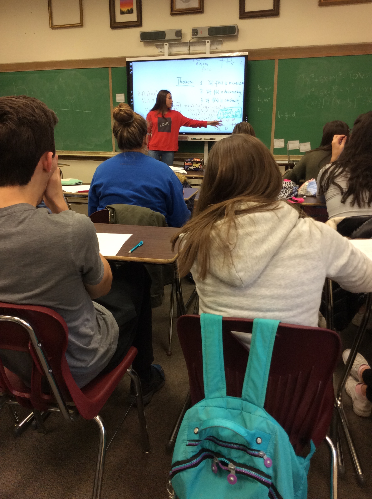
I encourage students to work in groups when they solve problems. This allows them to listen well and collaborate with each other. This is an important skill they will need when they work in a job and the classroom is a good setting to begin developing those habits.
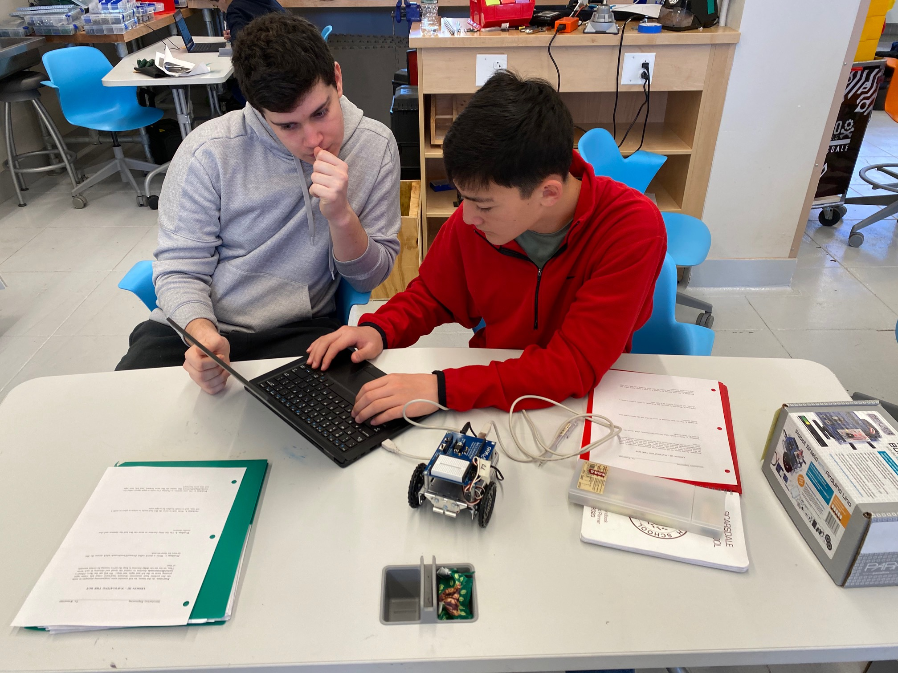 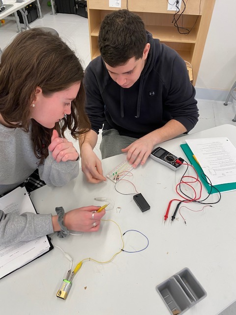
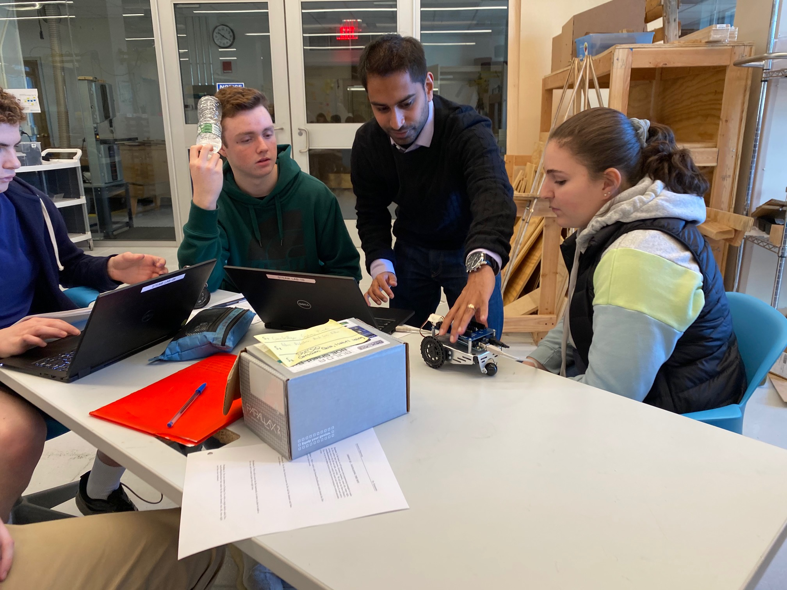 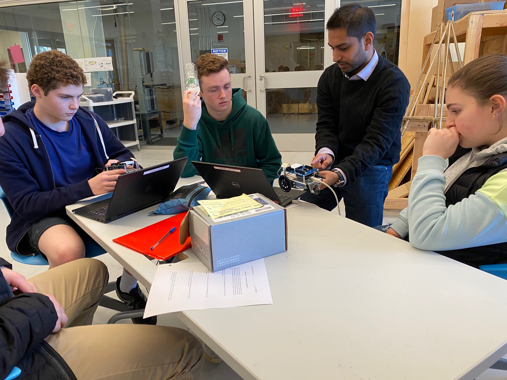
I use my office hours to meet with students not just individually but also in groups. This allows me to have a discussion with them about mathematics and problem solving. It also gives me the opportunity to have students explain work to each other, collaborate and internalize the ideas more deeply without me dictating to them. I have found office hours to be a crucial component of my teaching in terms of developing a culture of learning and exploration.
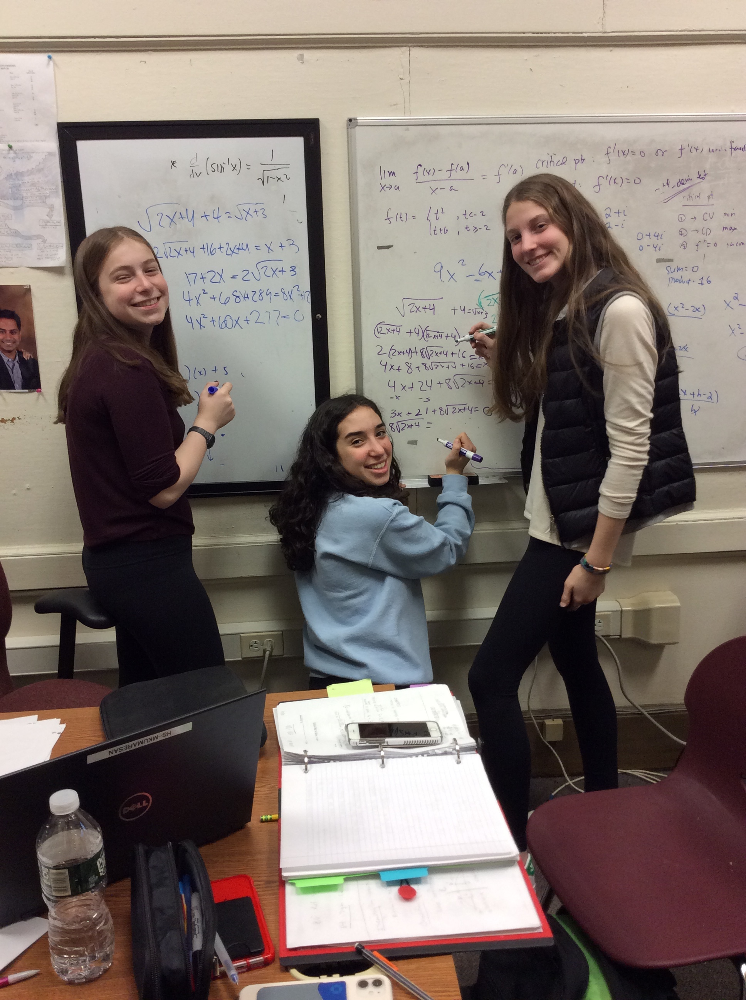 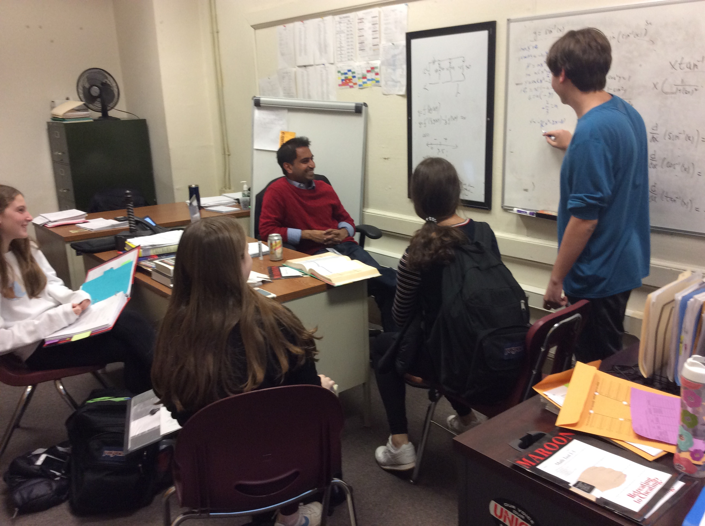 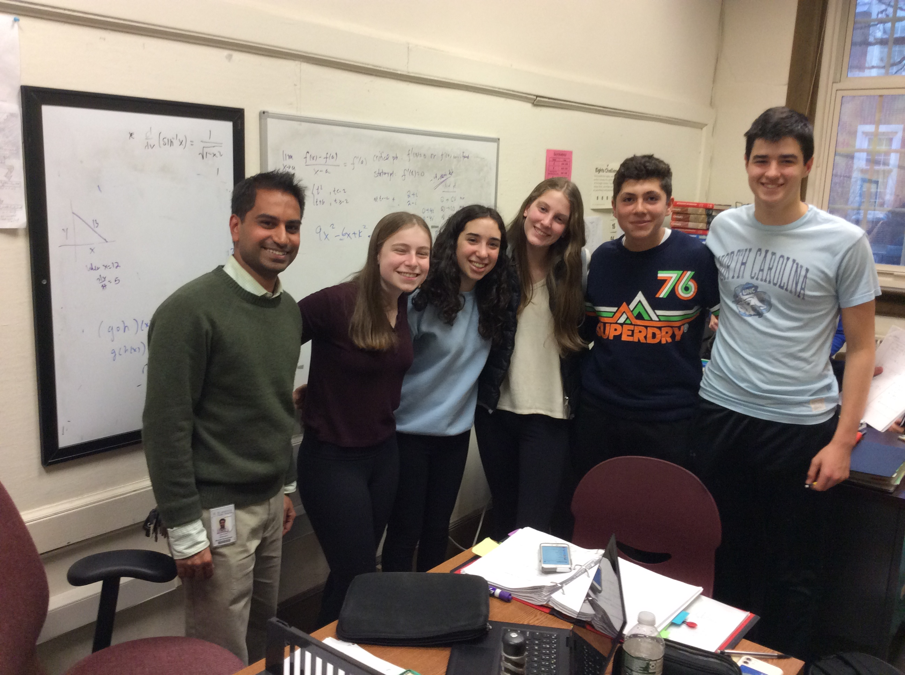
I attempt to set up routines in my classroom to facilitate learning and development. The Syllabus which I give out on the first day of class helps to define expectations for the class for both the students and myself. Below are some examples from my Mathematics and Engineering courses.
- Syllabus for Math 433
- Syllabus for Physical Computing
I maintain a presence on the Scarsdale Website through my Teacher page. Students can find annoucements, class handouts and homework assignments organized by date. They can also find times during which I am holding office hours. My Teacher Page allows me to keep the class organized and also gives students a place to access materials they need for the class.
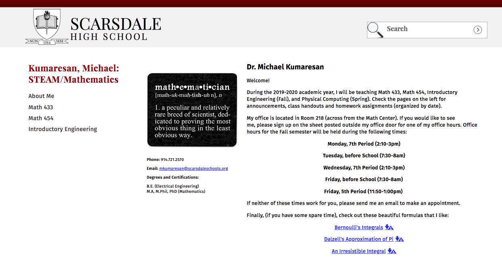
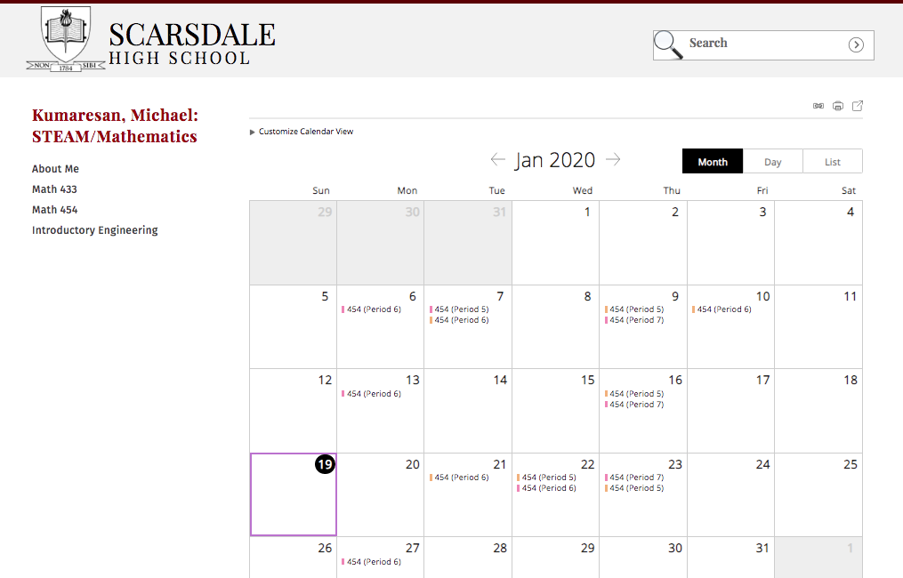
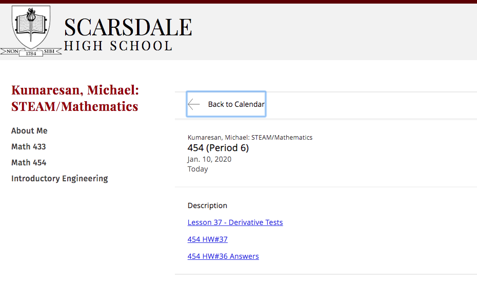